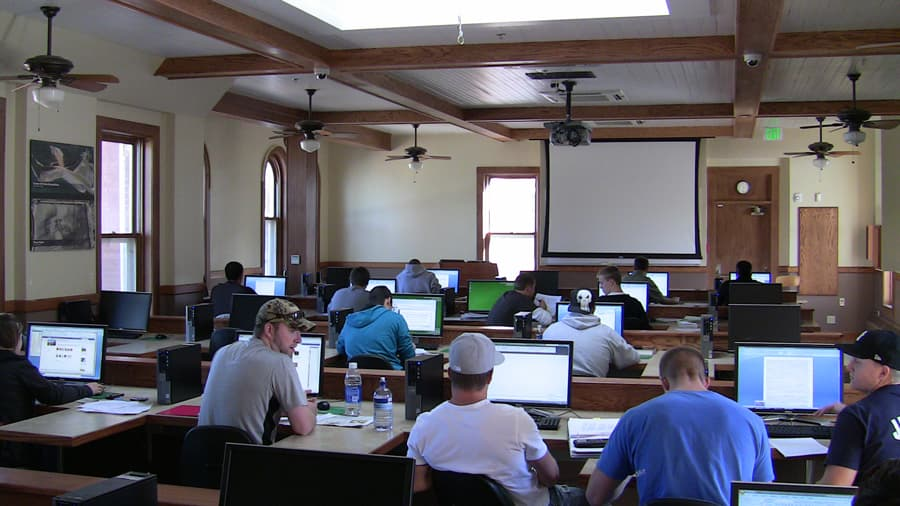

Precon 200
Due to continued noncompliance with University and Larimer County mask requirements, the Precon 200 lab has removed all staff and required each user to scan in with a CSU ID.
Welcome to the Precon 200 computer lab. Located on the second floor of the Preconstruction Center at 251 W Laurel St, north of the Oval and directly south of the Rainbow Café, this lab serves Construction Management and Interior Archiecture and Design majors.
The Precon 200 lab has 95 computers available to students and 2 teacher podiums with projector screens.
Reservations
The Precon 200 lab is reserved for classes during the following times:
- Tuesday: 8:00am-9:00am, 9:00am-10:40am, 12:00pm-1:00pm, 1:00pm-2:40pm
- Wednesday: 8:00am-9:40am, 10:00am-11:40am, 12:00pm-1:40pm, 2:00-3:40pm
- Thursday: 8:00am-9:40am, 10:00am-11:40am, 12:00pm-1:40pm, 2:00-3:40pm, 4:00pm-6:50pm
- Friday: 8:00am-9:40am, 10:00am-11:40am, 12:00pm-1:40pm, 2:00-3:40pm
Hardware
The Precon 200 lab has a color printer, 2 black and white printers, and a plotter. The computers are HP Z2 Mini workstations equipped with 8GB of RAM.
Software
The following software is available in the Precon 200 lab:
- Adobe Acrobat Reader (PDF Viewer)
- Arduino
- Audacity
-
Autodesk 2022
- 3DS Max
- Architecture
- Arnold
- AutoCAD
- Inventor
- Maya
- NavisWorks
- Revit
- ReCap
- Robot Structural Analysis
- Bluebeam eXtreme
- EndNote
- Enscape 3D
- Kurzweil
- MATLAB
- Microsoft Office
- Microsoft Project
- Microsoft Visio
- OnScreen Takeoff
- Powerproject (Asta)
- PuTTY
- R for Windows
- RStudio Desktop
- SketchUp Pro
- SPSS, AMOS
- Unity 2021
- Vico Office
- VLC Player
- VNC Viewer
- WindowShades
- Zotero